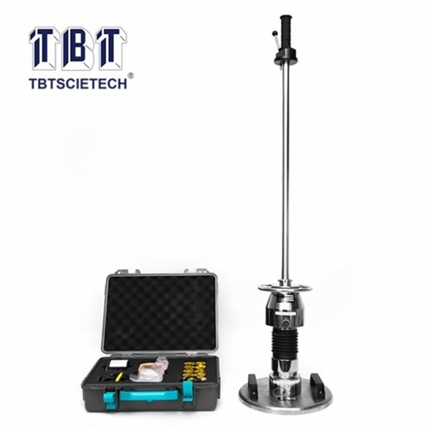
Reference image. Shows the product type, not the Chinese maker's product.
Light weight deflectometer (dynamic plate load test, Evd)
Portable falling weight device for fast determination of the dynamic deformation modulus Evd of formation and base layers.
Specifications
| Max. impact force | 7.07 kN |
|---|---|
| Drop height | 700 ± 20 mm |
| Falling weight | 10 kg |
| Load plate | Ø 300 mm |
| Evd measuring range | 10–225 MPa |
| Measuring depth | 0–500 mm |
| Data acquisition | Wireless handheld terminal with Bluetooth printer |
Internal
No manufacturer in the travel-route cities – ask on site (wholesale market, trade fair) or release a maker from the archive.
More
the DE reference of EUR 2,999 excludes EUR 99 shipping.
- Landed cost
- €1,454.93
- Selling price (net)
- €2,142.14
- Margin
- €687.21 · 32.1%
- Target price China
- €1,485.54
- Saving vs. buying in Germany
- 42.3%
- Minimum order
- 1 unit
- Price basis
- FOB
per unit, net. China prices are list prices (not negotiated). Freight, duty and handling are assumptions; import VAT is deductible as input tax. Assumptions: freight by product group, 3 % handling, selling 15 % below the German market price, target margin 25 %.
Description
The light weight deflectometer determines the dynamic deformation modulus Evd of formation …
More
frost-protection and base layers within minutes and is therefore the quick control tool for compaction in service trenches, backfills and track beds. A 10 kg falling weight from 700 mm height generates 7.07 kN of impact force on a 300 mm load plate; settlement and Evd are recorded electronically and logged via a wireless handheld terminal with a Bluetooth printer. In Germany, test specification TP BF-StB Part B 8.3 governs acceptance-relevant measurements, combined with regular calibration by a body recognised by the BASt. A Chinese device is therefore initially an in-house monitoring instrument until calibration and recognition have been proven.
Customs
| Tariff code | 90248000 |
|---|---|
| Duty rate | 0 % |
Standards & marks (Germany/EU)
TP BF-StB Teil B 8.3Dynamic plate load test using the light weight deflectometerZTV E-StB 17Additional technical contract conditions and guidelines for earthworks in road constructionDIN 18134Soil – Plate load test (static method, for distinction)ASTM E2835Measuring deflections using a portable impulse plate load test device2006/42/EGMachinery Directive (from 20 Jan 2027 Machinery Regulation (EU) 2023/1230)2014/30/EU (EMV)EMC Directive (electronics and wireless terminal)
Internal · notes
Request from the supplier
- Calibration certificate to TP BF-StB Part B 8.3 from a BASt-recognised calibration body (otherwise in-house monitoring only)
- Comparison measurement on a reference subgrade against a recognised device (Zorn ZFG, HMP LFG or Terratest) with a report
- EU declaration of conformity (Machinery Directive 2006/42/EC, EMC) and CE technical documentation
- Material and dimension certificate for the falling weight (10 kg), guide rod and load plate (Ø 300 mm)
- German manual, software with Evd evaluation and report printing, plus spare-parts and warranty commitment
Sources
More products in this category
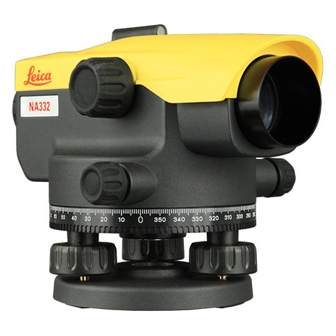
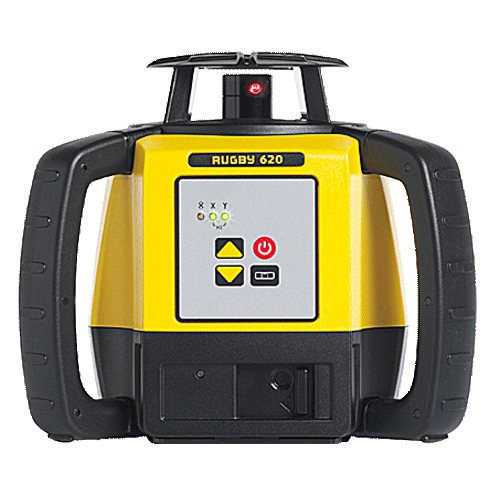
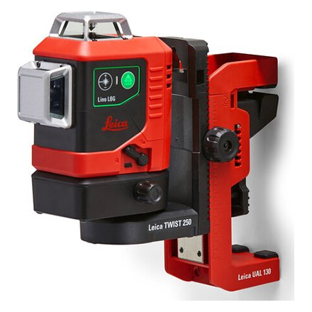
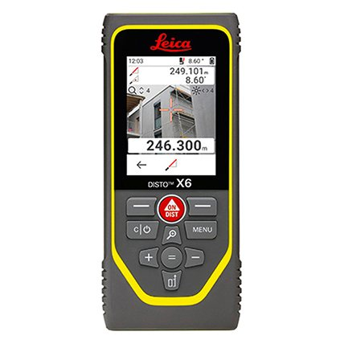
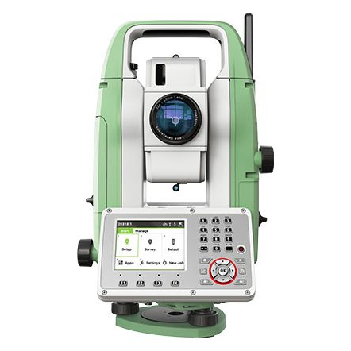
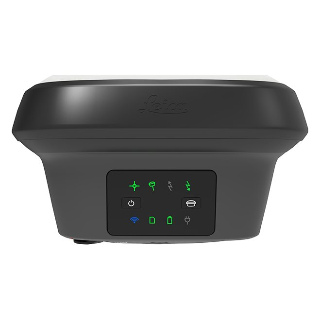
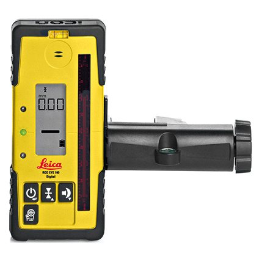
Cross-sell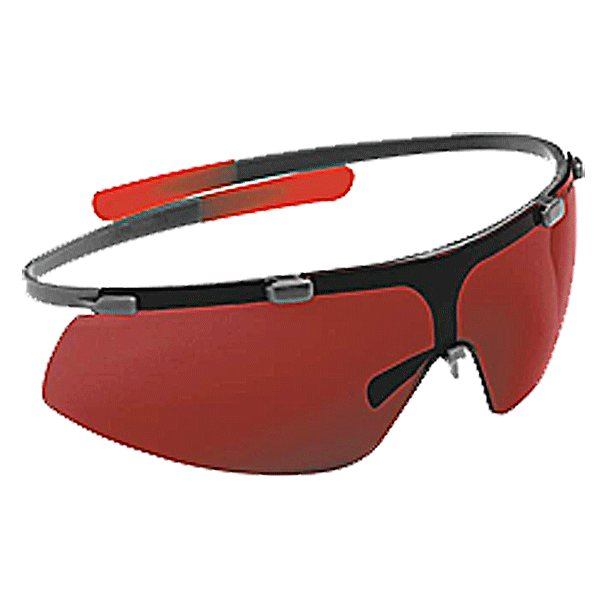
Cross-sell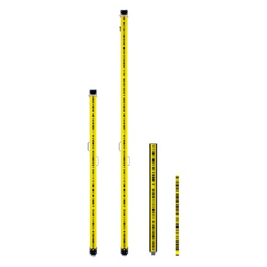
Cross-sell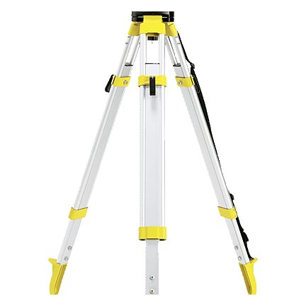
Cross-sell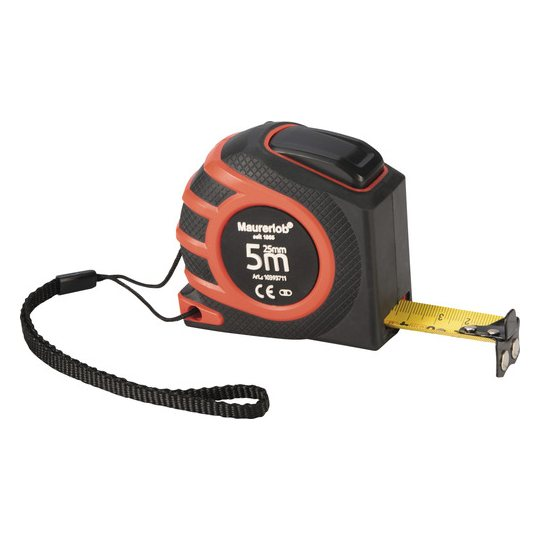
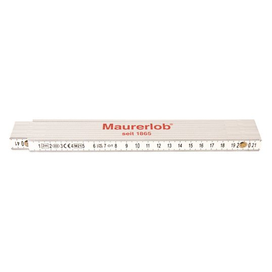
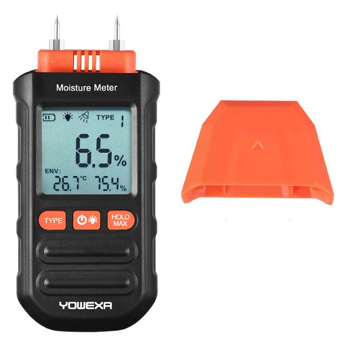
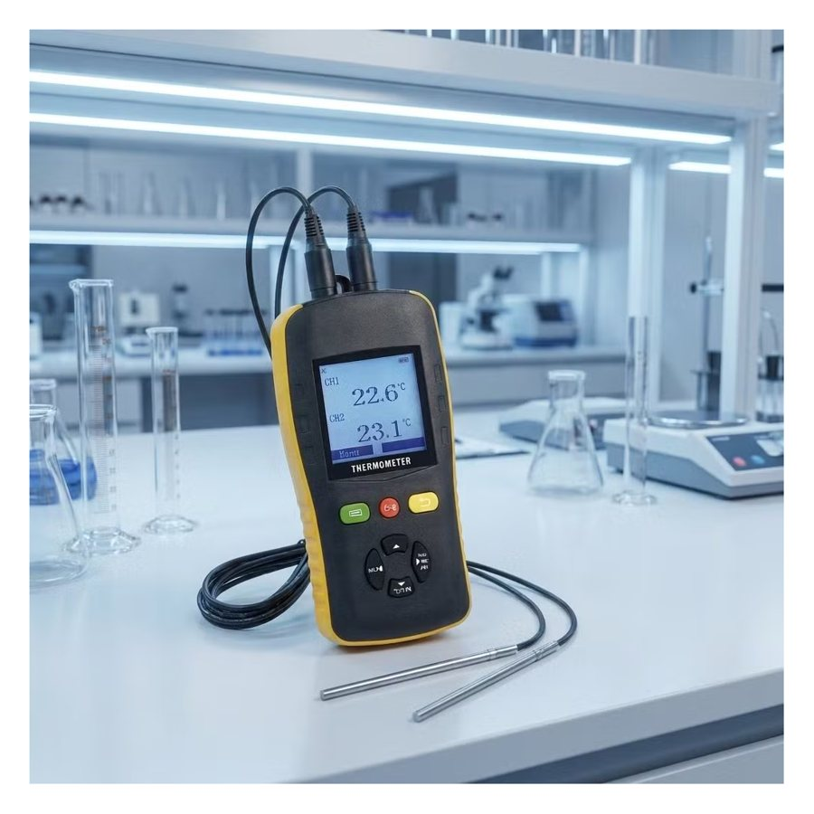
Cross-sell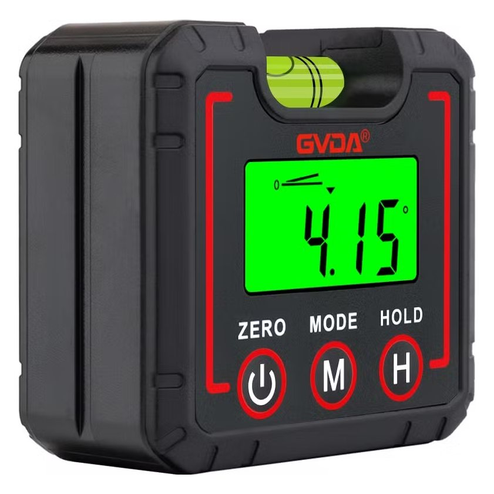
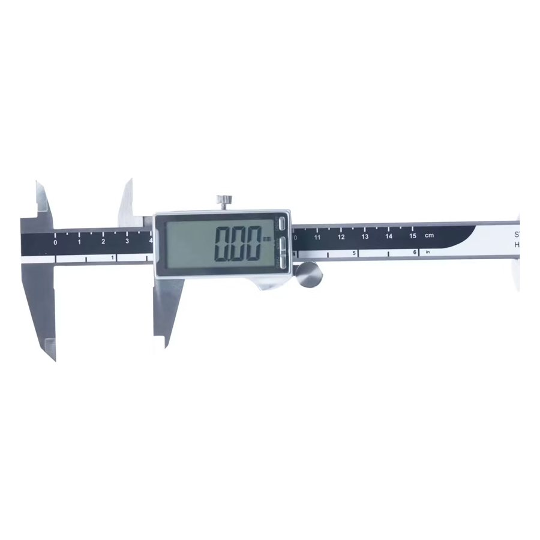
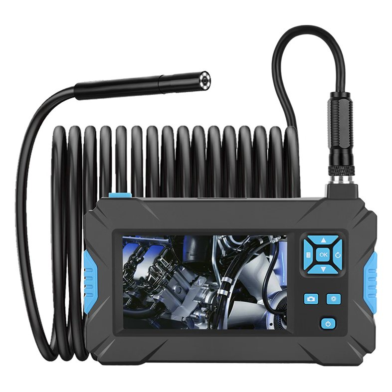
Upsell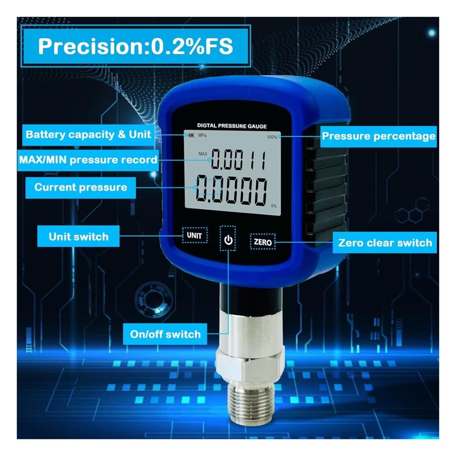